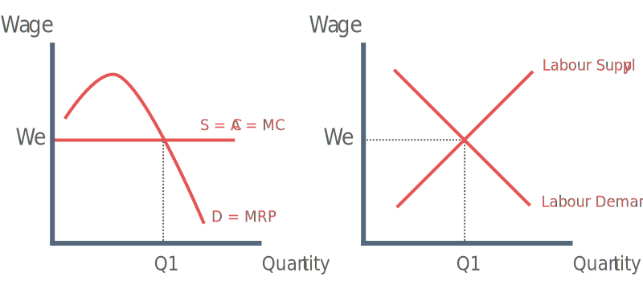

What is Demand for Labour?
Demand for labour is a derived demand, meaning it depends on the demand for the service or produce that the worker produces. Demand for labour depends strongly on the productivity of the work, we refer this as MRP.
Marginal Productivity Theory
The theory of marginal productivity of labour states that demand for workers depends on their marginal revenue product (MRP).

In the short run, as a firm takes on more workers, output rises at first. This is because of increasing returns due to the benefits of divisions of labour.
After a particular level of employment is reached, MRP tends to fall due to the onset of diminishing marginal returns. With perfect competition in the product market, the firm is the price taker, thus price doesn’t change if it sells more, so MR = Price. (we also assume workers are homogenous and there are no trade unions)
If we assume perfect competition, then firms can recruit workers at a constant wage rate (MC = W). Firms in product markets maximize at MC = MR. The same applies in labour markets. Firms employ labour up to and including the point where the marginal revenue gained from the last unit is the same as marginal cost of employing it i.e. MRP = MC.
Factors that shift demand for labour
1) Rise in consumer demand for a product
If there is a rise in consumer demand for a product, then demand for labour will shift outward. This is because labour is in derived demand.
2) Productivity
↑ output per worker = more attractive labour
3) Price of other factors of production
If capital becomes cheaper relative to labour then demand for labour will fall.
4) Government employment subsidy
A government employment subsidy will allow a firm to employ more workers and will shift demand for labour outwards.
5) Supplementary labour costs
E.g. an increase in employers national insurance contributions will lead to a fall in demand for labour.
Elasticity of demand for labour
The elasticity of the demand for labour is the responsiveness of quantity demanded of labour to a change in the wage rate.
Formula:
% ∆ Quantity of labour demanded (employment) % ∆ in Wage Rate
Factors Effecting Elasticity of Demand for labour
1) Time
In short run, firms may not have enough time to reorganize their operations and will thus have to employ the same number of workers even if wages increase. In this case demand for labour is inelastic.
2) Availability of Substitutes
The easier it becomes to substitute labour with capital equipment, the more elastic demand for labour will become.
3) The proportion of total labour cost to total cost
The larger the proportion of labour cost to total cost, the higher the elasticity of demand for labour.